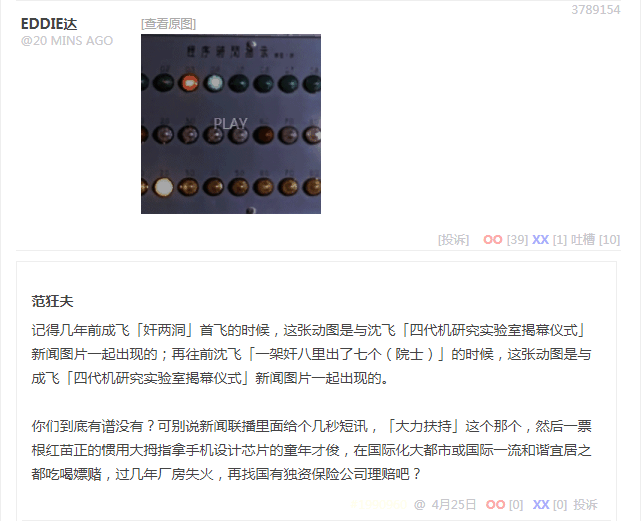
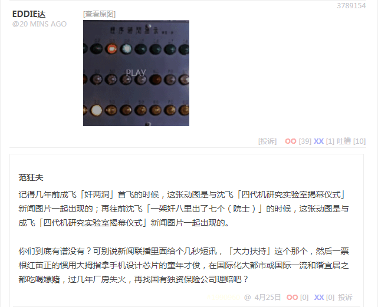
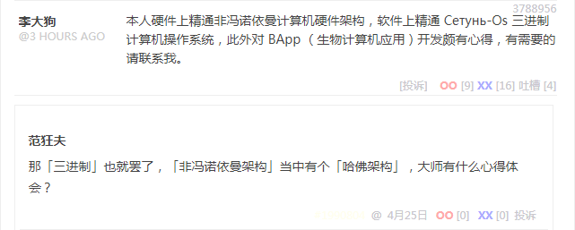
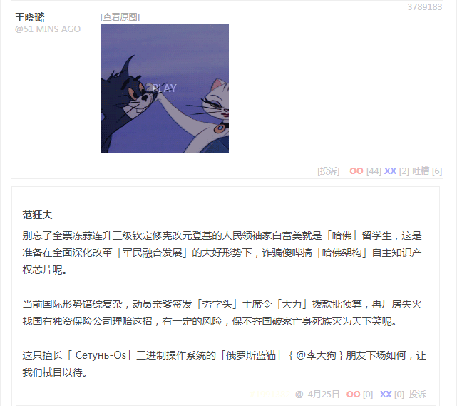

回复
刚在煎蛋无聊图又看见这张「砥砺奋进五年来到处赶场的金牌龙套」动图：
 自力更生艰苦奋斗

厉害了，为出场最频繁的动图点赞！
自力更生艰苦奋斗

厉害了，为出场最频繁的动图点赞！
应景评论如下：
记得几年前成飞「奸两洞」首飞的时候，这张动图是与沈飞「四代机研究实验室揭幕仪式」新闻图片一起出现的；再往前沈飞「一架奸八里出了七个（院士）」的时候，这张动图是与成飞「四代机研究实验室揭幕仪式」新闻图片一起出现的。
你们到底有谱没有？可别说新闻联播里面给个几秒短讯，「大力扶持」这个那个，然后一票根红苗正的惯用大拇指拿手机设计芯片的童年才俊，在国际化大都市或国际一流和谐宜居之都吃喝嫖赌，过几年厂房失火，再找国有独资保险公司理赔吧？
至于为什么，因为之前评论了某条段子：

根红苗正信息技术兲才出现了
本人硬件上精通非冯诺依曼计算机硬件架构，软件上精通 Сетунь-Os 三进制计算机操作系统，此外对 BApp （生物计算机应用）开发颇有心得，有需要的请联系我。
那「三进制」也就罢了，「非冯诺依曼架构」当中有个「哈佛架构」，大师有什么心得体会？
别的废话不说了，都说过多少遍了，我中华兲朝上国自有国情在此，全面深化改革「军民融合发展」的大好形势下，「斗争失败者」才充军发配钻山沟献了青春献终身献了终身献子孙遗产都交党费骨灰盒上盖一块画着镰刀榔头的抹布就被打发，而「斗争胜利者」在国际化大都市或国际一流和谐宜居之都灯红酒绿之中长袖善舞谈笑风生，是手机推送新闻头条中「与时俱进民营企业家」呢。
最新进展：

根红苗正信息技术兲才上当了
 精虫上脑罗刹蓝猫
精虫上脑罗刹蓝猫
别忘了全票冻蒜连升三级钦定修宪改元登基的人民领袖家白富美就是「哈佛」留学生，这是准备在全面深化改革「军民融合发展」的大好形势下，诈骗傻哔搞「哈佛架构」自主知识产权芯片呢。
当前国际形势错综复杂，动员亲爹签发「夯字头」主席令「大力」拨款批预算，再厂房失火找国有独资保险公司理赔这招，有一定的风险，保不齐国破家亡身死族灭为天下笑呢。
这只擅长「Сетунь-Os」三进制操作系统的「俄罗斯蓝猫」@李大狗朋友下场如何，让我们拭目以待。
范队，知乎置顶帖是不是针对你的。。为什么情商比智商重要？补充说明除了性格古怪，情商低下智商高超的人😂